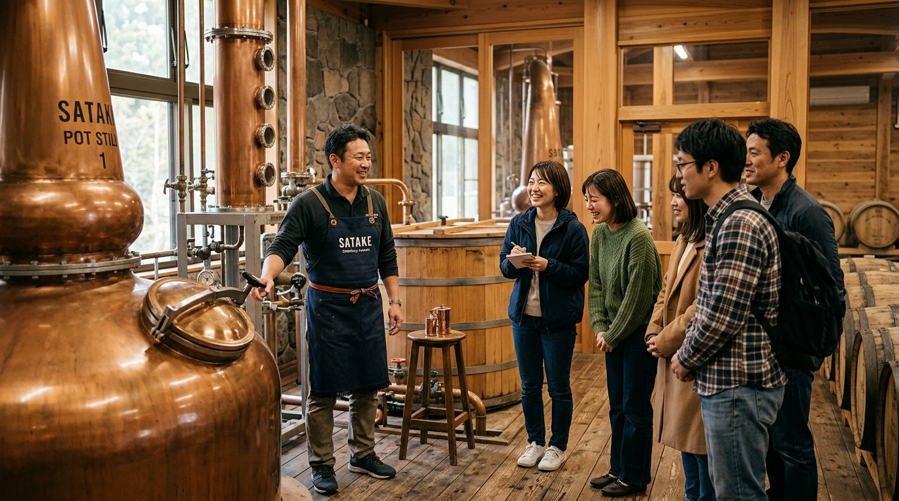
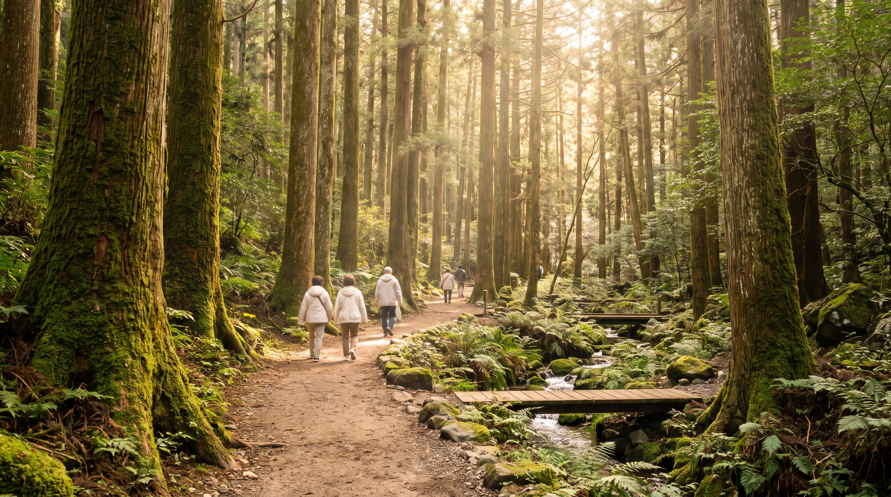
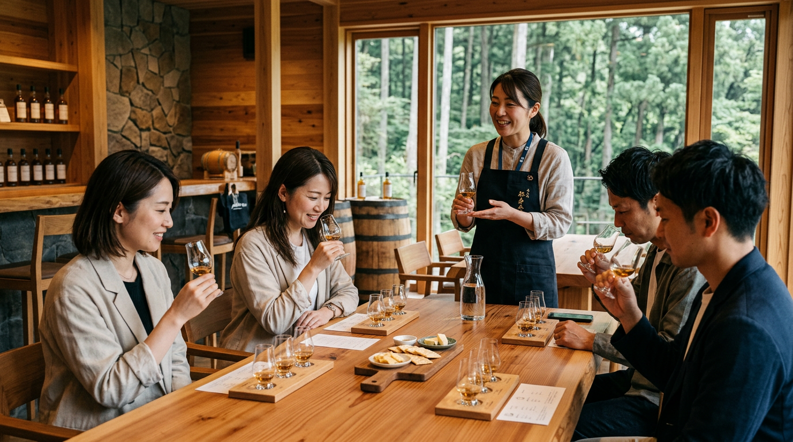

てすとてすとてすと

てすとです！！！

てすとおわり
佐竹蒸溜所では、蒸溜所見学や森林散策、テイスティングなどを通して、ウイスキーと高千穂の自然を楽しむことができます。
ものづくりの現場を見学したり、森の中を歩いたり、ゆっくりと景色を眺めたり。自分のペースで佐竹蒸溜所での時間をお楽しみください。
高千穂の自然が育み、職人の手が磨き上げる。豊かな自然に恵まれたこの地で、一つひとつ丁寧に積み重られるものづくり。
佐竹蒸溜所が大切にしている想いと、こだわりをご紹介します。
快適なひとときをお過ごしいただくために、施設情報についてご来場前に役立つ情報をご案内します。
住所：宮崎県西臼杵郡高千穂町3000
営業時間：9：00～17：00
休業日：年末年始/工場メンテナンス日(不定期)
延岡駅から高千穂バス停にてバスに乗車、15分ほどで蒸溜所に到着します。